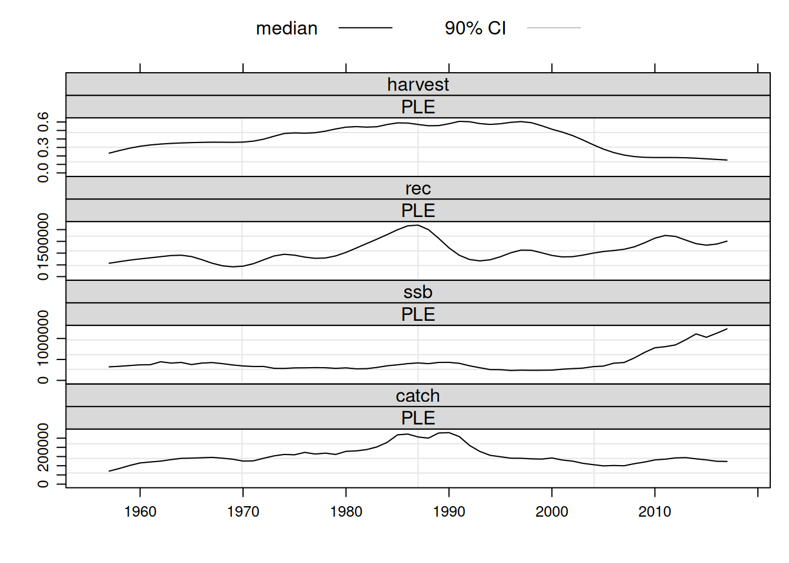

8 Fitting
The a4a stock assessment framework is implemented in R through the method sca(). The method call requires as a minimum a FLStock object and a FLIndices object, in which case the default submodels will be set by the method.
Having described building blocks, basic formulations and effects available to build a submodel’s model, it’s important to look into specific formulations and relate them to commonly known representations. Note that although a large number of formulations are available for each submodel, the user must carefuly decide on the full stock assessment model being build and avoid over-paramerizing. Over-parametrization may lead to non-convergence, but may also end up not being very useful for prediction/forecasting, which is one of the main objectives of stock assessment.

By calling the fitted object the default submodel formulas are printed in the console:
## a4a model fit for: PLE
##
## Call:
## .local(stock = stock, indices = indices)
##
## Time used:
## Pre-processing Running a4a Post-processing Total
## 1.083177 15.839170 0.221837 17.144184
##
## Submodels:
## fmodel: ~te(age, year, k = c(6, 30), bs = "tp") + s(age, k = 6)
## srmodel: ~factor(year)
## n1model: ~s(age, k = 3)
## qmodel:
## BTS-Isis-early: ~s(age, k = 6)
## BTS-Combined (ISIS and TRIDENS): ~s(age, k = 6)
## SNS: ~s(age, k = 5)
## BTS-Combined (all): ~s(age, k = 6)
## IBTS_Q3: ~s(age, k = 6)
## IBTS_Q1: ~s(age, k = 5)
## vmodel:
## catch: ~s(age, k = 3)
## BTS-Isis-early: ~1
## BTS-Combined (ISIS and TRIDENS): ~1
## SNS: ~1
## BTS-Combined (all): ~1
## IBTS_Q3: ~1
## IBTS_Q1: ~1To set specific submodels the user has to write the relevant R formula and include it in the call. The arguments for each submodel are self-explanatory: fishing mortality is ‘fmodel’, indices’ catchability is ‘qmodel’, stock-recruitment is ‘srmodel’, observation variance is ‘vmodel’ and for initial year’s abundance is ‘n1model’. The following model comes closer to the official stock assessment of North Sea plaice, as such we’ll name it \(0\) and keep it for future comparisons:
For future referencing we’ll start with a base fit to be used for future comparisons, named fit 0.
fmod0 <- ~s(age, k=6)+s(year, k=10)+te(age, year, k=c(3,8))
qmod0 <- list(~s(age, k = 4), ~s(age, k = 3), ~s(age, k = 3)+year, ~s(age, k = 3), ~s(age, k = 4), ~s(age, k = 6))
srmod0 <- ~ s(year, k=20)
vmod0 <- list(~s(age, k=4), ~1, ~1, ~1, ~1, ~1, ~1, ~1)
n1mod0 <- ~ s(age, k=3)
fit0 <- sca(ple4, ple4.indices, fmodel=fmod0, qmodel=qmod0, srmodel=srmod0, n1model=n1mod0, vmodel=vmod0)
stk0 <- ple4 + fit0
plot(stk0)
As before by calling the fitted object submodels’ formulas are printed in the console:
## a4a model fit for: PLE
##
## Call:
## .local(stock = stock, indices = indices)
##
## Time used:
## Pre-processing Running a4a Post-processing Total
## 1.083177 15.839170 0.221837 17.144184
##
## Submodels:
## fmodel: ~te(age, year, k = c(6, 30), bs = "tp") + s(age, k = 6)
## srmodel: ~factor(year)
## n1model: ~s(age, k = 3)
## qmodel:
## BTS-Isis-early: ~s(age, k = 6)
## BTS-Combined (ISIS and TRIDENS): ~s(age, k = 6)
## SNS: ~s(age, k = 5)
## BTS-Combined (all): ~s(age, k = 6)
## IBTS_Q3: ~s(age, k = 6)
## IBTS_Q1: ~s(age, k = 5)
## vmodel:
## catch: ~s(age, k = 3)
## BTS-Isis-early: ~1
## BTS-Combined (ISIS and TRIDENS): ~1
## SNS: ~1
## BTS-Combined (all): ~1
## IBTS_Q3: ~1
## IBTS_Q1: ~1The method sca has other arguments which may be set by the user:
- [covar:] a `FLQuant} with covariates;
- [wkdir:] a folder (character) where the files will be saved for posterior inspection by the user;
- [verbose:] be more verbose (logical);
- [fit:] type of fit (character),
- ‘MP’ runs the minimizer without trying to invert the hessian and as such doesn’t return the covariance matrix of the parameters, normally used inside loops where parameter variance may not be relevant;
- ‘assessment’ runs minimizer and inverts hessian, returns the covariance matrix of the estimated parameters and the convergence criteria set in ;
- ‘MCMC’ runs ’s MCMC fit
- [center:] shall observations be centered before fitting (logical);
- [mcmc:] ’s MCMC arguments (character vector), must be paired with `fit=“MCMC”}.
There are a set of methods for a4a fit objects which help manipulating sca() results, namely:
- [+:] update the stock object with the fitted fishing mortalities, population abundance and catch in numbers at age;
8.1 Fishing mortality submodel (\(F_{ay}\))
We will now take a look at some examples for \(F\) models and the forms that we can get.
A non-separable model, where we consider age and year to interact can be modeled using a smooth interaction term in the F model using a tensor product of cubic splines with the te method (Figure 8.1), again borrowed from mgcv.

Figure 8.1: Fishing mortality smoothed non-separable model
In the last examples the fishing mortalities (Fs’) are linked across age and time. What if we want to free up a specific age class because in the residuals we see a consistent pattern. This can happen, for example, if the spatial distribution of juveniles is disconnected to the distribution of adults. The fishery focuses on the adult fish, and therefore the the F on young fish is a function of the distribution of the juveniles and could deserve a specific model. This can be achieved by adding a component for the year effect on age 1 (Figure 8.2).
fmod <- ~ te(age, year, k = c(4,20)) + s(year, k = 5, by = as.numeric(age==1))
fit <- sca(ple4, ple4.indices[1], fmod)
Figure 8.2: Fishing mortality age-year interaction model with extra age 1 smoother.
8.1.1 Separable model
One of the most useful models for fishing mortality is one in which ‘age’ and ‘year’ effects are independent, that is, where the shape of the selection pattern does not change over time, but the overall level of fishing mortality do. Commonly called a ‘separable model’.
A full separable model in a4a is written using the factor function which converts age and year effects into categorical values, forcing a different coefficient to be estimated for each level of both effects. This model has age x year number of parameters.
One can reduce the number of parameters and add dependency along both effects, although still keeping independence of each other, by using smoothers rather than factor. We’ll use a (unpenalised) thin plate spline provided by package mgcv method s(). We’re using the North Sea Plaice data, and since it has 10 ages we will use a simple rule of thumb that the spline should have fewer than \(\frac{10}{2} = 5\) degrees of freedom, and so we opt for 4 degrees of freedom. We will also do the same for year and model the change in \(F\) through time as a smoother with 20 degrees of freedom.
An interesting extension of the separable model is the ‘double separable’ where a third factor or smoother is added for the cohort effect.
fmod3 <- ~ s(age, k=4) + s(year, k=20) + s(as.numeric(year-age), k=10)
fit3 <- sca(ple4, ple4.indices, fmodel=fmod3, fit="MP")## Warning: *** ~s(age, k = 4) + s(year, k = 20) + s(as.numeric(year - age), k = 10) has 1 too many parameter(s)!!
## i will remove the redundant ones:
## s(as.numeric(year - age)).9Figures 8.3 and 8.4 depicts the three models selectivities for each year. Each separable model has a single selectivity that changes it’s overall scale in each year, while the double separable introduces some variability over time by modeling the cohort factor.
flqs <- FLQuants(factor=harvest(fit1), smooth=harvest(fit2), double=harvest(fit3))
pset <- list(strip.background=list(col="gray90"))
xyplot(data~age|qname, groups=year, data=flqs, type="l", col=1, layout=c(3,1), ylab="fishing mortality", par.settings=pset)
Figure 8.3: Selection pattern of separable models. Each line represents the selection pattern in a specific year. Independent age and year effects (factor), internally dependent age and year (smooth), double separable (double).

Figure 8.4: Fishing mortality of separable models. Independent age and year effects (factor), internally dependent age and year (smooth), double separable (double).
8.1.2 Constant selectivity for contiguous ages or years
To set these models we’ll use the method replace() to define which ages or years will be modelled together with a single coefficient. The following example shows replace() in operation. The dependent variables used in the model will be changed and attributed the same age or year, as such during the fit observations of those age or year with will be seen as replicates. One can think of it as sharing the same mean value, which will be estimated by the model.
## [1] 1 2 3 4 5 6 7 8 9 9## [1] 1 2 3 4 5 6 6 6 6 6## [1] 1950 1951 1952 1953 1954 1955 1956 1957 1958 1959 1960 1961
## [13] 1962 1963 1964 1965 1966 1967 1968 1969 1970 1971 1972 1973
## [25] 1974 1975 1976 1977 1978 1979 1980 1981 1982 1983 1984 1985
## [37] 1986 1987 1988 1989 1990 1991 1992 1993 1994 1995 1996 1997
## [49] 1998 1999 2000 2001 2002 2003 2004 2005 2005 2005 2005 2005
## [61] 2005In the \(F\) submodel one can use this method to fix the estimation of \(F\) in the plus group to be the same as in the last non-aggregated age.

Figure 8.5: F-at-age fixed above age 9
Or estimate the average \(F\) in the most recent years, instead of averaging after the assessment to compute the statu quo selection pattern.
fmod <- ~ s(age, k=4) + s(replace(year, year>2013, 2013), k=20)
fit <- sca(ple4, ple4.indices, fmod)
Figure 8.6: F-at-age fixed for the most recent 5 years
8.1.3 Time blocks selectivity
To define blocks of data sca() uses the method breakpts(), which creates a factor from a vector with levels defined by the second argument.
## [1] (1949,2000] (1949,2000] (1949,2000] (1949,2000] (1949,2000]
## [6] (1949,2000] (1949,2000] (1949,2000] (1949,2000] (1949,2000]
## [11] (1949,2000] (1949,2000] (1949,2000] (1949,2000] (1949,2000]
## [16] (1949,2000] (1949,2000] (1949,2000] (1949,2000] (1949,2000]
## [21] (1949,2000] (1949,2000] (1949,2000] (1949,2000] (1949,2000]
## [26] (1949,2000] (1949,2000] (1949,2000] (1949,2000] (1949,2000]
## [31] (1949,2000] (1949,2000] (1949,2000] (1949,2000] (1949,2000]
## [36] (1949,2000] (1949,2000] (1949,2000] (1949,2000] (1949,2000]
## [41] (1949,2000] (1949,2000] (1949,2000] (1949,2000] (1949,2000]
## [46] (1949,2000] (1949,2000] (1949,2000] (1949,2000] (1949,2000]
## [51] (1949,2000] (2000,2010] (2000,2010] (2000,2010] (2000,2010]
## [56] (2000,2010] (2000,2010] (2000,2010] (2000,2010] (2000,2010]
## [61] (2000,2010]
## Levels: (1949,2000] (2000,2010]## [1] (1949,1961.2] (1949,1961.2] (1949,1961.2]
## [4] (1949,1961.2] (1949,1961.2] (1949,1961.2]
## [7] (1949,1961.2] (1949,1961.2] (1949,1961.2]
## [10] (1949,1961.2] (1949,1961.2] (1949,1961.2]
## [13] (1961.2,1973.4] (1961.2,1973.4] (1961.2,1973.4]
## [16] (1961.2,1973.4] (1961.2,1973.4] (1961.2,1973.4]
## [19] (1961.2,1973.4] (1961.2,1973.4] (1961.2,1973.4]
## [22] (1961.2,1973.4] (1961.2,1973.4] (1961.2,1973.4]
## [25] (1973.4,1985.6] (1973.4,1985.6] (1973.4,1985.6]
## [28] (1973.4,1985.6] (1973.4,1985.6] (1973.4,1985.6]
## [31] (1973.4,1985.6] (1973.4,1985.6] (1973.4,1985.6]
## [34] (1973.4,1985.6] (1973.4,1985.6] (1973.4,1985.6]
## [37] (1985.6,1997.8] (1985.6,1997.8] (1985.6,1997.8]
## [40] (1985.6,1997.8] (1985.6,1997.8] (1985.6,1997.8]
## [43] (1985.6,1997.8] (1985.6,1997.8] (1985.6,1997.8]
## [46] (1985.6,1997.8] (1985.6,1997.8] (1985.6,1997.8]
## [49] (1997.8,2010] (1997.8,2010] (1997.8,2010]
## [52] (1997.8,2010] (1997.8,2010] (1997.8,2010]
## [55] (1997.8,2010] (1997.8,2010] (1997.8,2010]
## [58] (1997.8,2010] (1997.8,2010] (1997.8,2010]
## [61] (1997.8,2010]
## 5 Levels: (1949,1961.2] (1961.2,1973.4] ... (1997.8,2010]Note seq() computes ‘left-open’ intervals, which means that to include 1950 the sequence must start one year earlier.
These methods can be used to create discrete time series, for which a different selection pattern is allowed in each block. This is called an interaction in statistical modelling parlance, and typically a * denotes an interaction term; for smoothers an interaction is achieved using the by argument. When this argument is a factor a replicate of the smooth is produced for each factor level.
In the next case we’ll use the breakpts() to split the time series at 1990, although keeping the same shape in both periods, a thin plate spline with 3 knots (Figure 8.7).

Figure 8.7: F-at-age in two periods using in both cases a thin plate spline with 3 knots
8.1.4 Time changing selectivity
In many cases, it may be desirable to allow the selection pattern to evolve over time, from year to year. Again there are several ways to do this, one way is to estimate a mean selection pattern, while also allowing F to vary over time for each age. This is like a seperate smoother over year, with ‘age blocks’ so, looking back at previous examples, we have:
This is a type of interaction between age and year, but the only connection (or correlation) across ages is via the smoother on age, however there are still 15 degrees of freedom for each age, so the model 5 x 15 + 4 = 69 degrees of freedom. To include correlation across ages and years together then the tensor product (te() function) is used, this has the effect of restricting the flexibility of the model for F. In the following, there is a smoother in 2 dimensions (age and year) where there is 5 degrees of freedom in the age direction, and 15 in the year dimension, resulting in a total of 5 x 15 = 65 degrees of freedom
Often the above formulations provide too much flexibility, and a more complicated, but simpler model is preferable:
in the above model, the main effects for age and year still have similar flexibility to the full tensor model, however, the interaction (or the change in F at age over time) has been restricted, so that the full model now has 4 + 15 + 3 x 5 = 34 degrees of freedom.
8.1.5 Closed form selection pattern
One can use a closed form for the selection pattern. The only requirement is to be able to write it as a formula, the example below uses a logistic form.

Figure 8.8: F-at-age logistic
8.1.6 More models [TO BE MOVED TO ITS OWN SECTION?]
More complicated models can be built with these tools. For example, Figure 8.9 shows a model where the age effect is modelled as a smoother (the same thin plate spline) throughout years but independent from each other.
fmod <- ~ factor(age) + s(year, k=10, by = breakpts(age, c(2:8)))
fit <- sca(ple4, ple4.indices, fmod)
Figure 8.9: F-at-age as thin plate spline with 3 knots for each age
A quite complex model that implements a cohort effect can be set through the following formula. Figure 8.10 shows the resulting fishing mortality. Note that in this case we end up with a variable F pattern over time, but rather than using 4 * 10 = 40 parameters, it uses, 4 + 10 + 10 = 24.
fmodel <- ~ s(age, k = 4) + s(pmax(year - age, 1957), k = 10) + s(year, k = 10)
fit <- sca(ple4, ple4.indices, fmodel=fmodel)
Figure 8.10: F-at-age with a cohort effect.
8.2 Abundance indices catchability submodel (\(Q_{ays}\))
The catchability submodel is set up the same way as the \(F\) submodel and the tools available are the same. The only difference is that the submodel is set up as a list of formulas, where each formula relates with one abundance index. There’s no limitation in the number of indices or type that can be used for a fit. It’s the analyst that has to decide based on her/his expertise and knowledge of the stock and fleet dynamics.
8.2.1 Catchability submodel for age based indices
A first model is simply a dummy effect on age, which means that a coefficient will be estimated for each age. Note that this kind of model considers that levels of the factor are independent (Figure 8.11).
qmod <- list(~factor(age))
fit <- sca(ple4, ple4.indices[1], qmodel=qmod)
qhat <- predict(fit)$qmodel[[1]]
wireframe(qhat, zlab="q")
Figure 8.11: Catchability age independent model
If one considers catchability at a specific age to be dependent on catchability on the other ages, similar to a selectivity modelling approach, one option is to use a smoother at age, and let the data ‘speak’ regarding the shape (Figure 8.12).
qmod <- list(~ s(age, k=4))
fit <- sca(ple4, ple4.indices[1], qmodel=qmod)
qhat <- predict(fit)$qmodel[[1]]
wireframe(qhat, zlab="q")
Figure 8.12: Catchability smoother age model
Finally, one may want to investigate a trend in catchability with time, very common in indices built from CPUE data. In the example given here we’ll use a linear trend in time, set up by a simple linear model (Figure 8.13).
qmod <- list( ~ s(age, k=4) + year)
fit <- sca(ple4, ple4.indices[1], qmodel=qmod)
qhat <- predict(fit)$qmodel[[1]]
wireframe(qhat, zlab="q")
Figure 8.13: Catchability with a linear trend in year
8.2.2 Catchability submodel for age aggregated biomass indices
The previous section was focused on age disaggregated indices, but age aggregated indices (CPUE, biomass, DEPM, etc) may also be used to tune the total biomass of the population. In these cases a different class for the index must be used, the FLIndexBiomass, which uses a vector index with the age dimension called ‘all’. Note that in this case the qmodel should be set without age factors, although it can have a ‘year’ component and covariates if needed. An interesting feature with biomass indices is the age range they refer to can be specified.
# simulating a biomass index (note the name of the first dimension element) using
# the ple4 biomass and an arbritary catchability of 0.001 plus a lognormal error.
dnms <- list(age="all", year=range(ple4)["minyear"]:range(ple4)["maxyear"])
bioidx <- FLIndexBiomass(FLQuant(NA, dimnames=dnms))
index(bioidx) <- stock(ple4)*0.001
index(bioidx) <- index(bioidx)*exp(rnorm(index(bioidx), sd=0.1))
range(bioidx)[c("startf","endf")] <- c(0,0)
# note the name of the first dimension element
index(bioidx)## An object of class "FLQuant"
## , , unit = unique, season = all, area = unique
##
## year
## age 1957 1958 1959 1960 1961 1962 1963 1964 1965 1966 1967 1968
## all 372 382 408 528 521 539 517 681 545 587 565 587
## year
## age 1969 1970 1971 1972 1973 1974 1975 1976 1977 1978 1979 1980
## all 479 514 428 429 391 511 394 522 514 497 534 448
## year
## age 1981 1982 1983 1984 1985 1986 1987 1988 1989 1990 1991 1992
## all 395 413 578 720 591 630 927 728 770 524 568 428
## year
## age 1993 1994 1995 1996 1997 1998 1999 2000 2001 2002 2003 2004
## all 365 329 346 308 412 338 399 304 315 342 402 385
## year
## age 2005 2006 2007 2008 2009 2010 2011 2012 2013 2014 2015 2016
## all 379 368 490 532 520 625 757 725 848 1004 929 843
## year
## age 2017
## all 1132
##
## units: tTo estimate a constant selectivity over time one used the model \(\sim 1\). As a matter of fact the estimate value, 0.00101, is not very far from the simulated one, 0.001.
An example where the biomass index refers only to age 2 to 4 (for example a CPUE that targets these particular ages).
# creating the index
dnms <- list(age="all", year=range(ple4)["minyear"]:range(ple4)["maxyear"])
bioidx <- FLIndexBiomass(FLQuant(NA, dimnames=dnms))
# but now use only ages 2:4
index(bioidx) <- tsb(ple4[ac(2:4)])*0.001
index(bioidx) <- index(bioidx)*exp(rnorm(index(bioidx), sd=0.1))
range(bioidx)[c("startf","endf")] <- c(0,0)
# to pass this information to the model one needs to specify an age range
range(bioidx)[c("min","max")] <- c(2,4)
# fitting the model
fit <- sca(ple4, FLIndices(bioidx), qmodel=list(~1))Once more the estimate value, 9.9^{-4}, is not very far from the simulated one, 0.001.
8.2.3 Catchability submodel for single age indices
Similar to age aggregated indices one may have an index that relates only to one age, like a recruitment index. In this case the `FLIndex} object must have in the first dimension the age it referes to. The fit is then done relating the index with the proper age in numbers. Note that in this case the qmodel should be set without age factors, although it can have a ‘year’ component and covariates if needed.
idx <- ple4.indices[[1]][1]
fit <- sca(ple4, FLIndices(recidx=idx), qmodel=list(~1))
# the estimated catchability is
predict(fit)$qmodel[[1]]## An object of class "FLQuant"
## , , unit = unique, season = all, area = unique
##
## year
## age 1985 1986 1987 1988 1989 1990
## 1 0.000302 0.000302 0.000302 0.000302 0.000302 0.000302
## year
## age 1991 1992 1993 1994 1995
## 1 0.000302 0.000302 0.000302 0.000302 0.000302
##
## units:8.3 Stock-recruitment submodel (\(R_y\))
The S/R submodel is a special case, in the sense that it can be set up with the same linear tools as the \(F\) and \(Q\) models, but it can also use some hard coded models. The example shows how to set up a simple dummy model with factor(), a smooth model with s(), a Ricker model (ricker()), a Beverton and Holt model (bevholt()), a hockey stick model (hockey()), and a geometric mean model (geomean()). See Figure 8.14 for results. As mentioned before, the ‘structural’ models have a fixed variance, which must be set by defining the coefficient of variation.
srmod <- ~ factor(year)
fit <- sca(ple4, ple4.indices, srmodel=srmod)
srmod <- ~ s(year, k=10)
fit1 <- sca(ple4, ple4.indices, srmodel=srmod)
srmod <- ~ ricker(CV=0.3)
fit2 <- sca(ple4, ple4.indices, srmodel=srmod)
srmod <- ~ bevholt(CV=0.3)
fit3 <- sca(ple4, ple4.indices, srmodel=srmod)
srmod <- ~ hockey(CV=0.3)
fit4 <- sca(ple4, ple4.indices, srmodel=srmod)
srmod <- ~ geomean(CV=0.3)
fit5 <- sca(ple4, ple4.indices, srmodel=srmod)flqs <- FLQuants(factor=stock.n(fit)[1], smother=stock.n(fit1)[1], ricker=stock.n(fit2)[1], bevholt=stock.n(fit3)[1], hockey=stock.n(fit4)[1], geomean=stock.n(fit5)[1])
xyplot(data~year, groups=qname, data=flqs, type="l", auto.key=list(points=FALSE, lines=TRUE, columns=3), ylab="No. recruits")
Figure 8.14: Stock-recruitment models fits
8.4 Observation variance submodel (\(\{\sigma^2_{ay}, \tau^2_{ays}\}\))
The variance model allows the user to set up the shape of the observation variances \(\sigma^2_{ay}\) and \(\tau^2_{ays}\). This is an important subject related with fisheries data used for input to stock assessment models.
The defaults assume a U-shape model for catch-at-age and constant variance for abundance indices. The first relies on the fact that it’s common to have more precision on the most represented ages and less precision on the less frequent ages which tend to be the younger and older individuals. These sizes are less caught by the fleets and as such do not appear as often at the auction markets samples. With regards to the abundance indices, one assumes a scientific survey to have a well designed sampling scheme and protocols which keep observation error at similar levels across ages.
vmod <- list(~s(age, k=3), ~1)
fit1 <- sca(ple4, ple4.indices[1], vmodel=vmod)
vmod <- list(~s(age, k=3), ~s(age, k=3))
fit2 <- sca(ple4, ple4.indices[1], vmodel=vmod)Variance estimated for the constant model is 0.476 while for the U-shape model, fitted with a smoother, changes with ages (Figure 8.15).

Figure 8.15: Abundance index observation variance estimate
Observation variance options have an impact in the final estimates of population abundance, which can be seen in Figure 8.16.
flqs <- FLQuants(smother=stock.n(fit1), factor=stock.n(fit2))
xyplot(data~year|age, groups=qname, data=flqs, type="l",
scales=list(y=list(relation="free", draw=FALSE)),
auto.key=list(points=FALSE, lines=TRUE, columns=2),
par.settings=list(superpose.line=list(col=c("gray35", "black")),
strip.background=list(col="gray90")), ylab="")
Figure 8.16: Population estimates using two different variance models
8.5 Initial year abundance submodel (\(N_{a,y=1}\))
The submodel for the stock number at age in the first year of the time series is set up with the usual modelling tools (Figure 8.17). Beare in mind that the year effect does not make sense here since it refers to a single year, the first in the time series of data available. This model has its influence limited to the initial lower triangle of the population matrix, which in assessments with long time series doesn’t make much difference. Nevertheless, when modelling stocks with short time series in relation to the number of ages present, it becomes more important and should be given proper attention.
n1mod <- ~s(age, k=3)
fit1 <- sca(ple4, ple4.indices, fmodel=fmod0, qmodel=qmod0, srmodel=srmod0, vmodel=vmod0, n1model=n1mod)
n1mod <- ~factor(age)
fit2 <- sca(ple4, ple4.indices, fmodel=fmod0, qmodel=qmod0, srmodel=srmod0, vmodel=vmod0, n1model=n1mod)
flqs <- FLQuants(smother=stock.n(fit1)[,1], factor=stock.n(fit2)[,1])pset <- list(superpose.line=list(col=c("gray50", "black"), lty=c(1,2)))
xyplot(data~age, groups=qname, data=flqs, type="l", auto.key=lgnd, par.settings=pset, ylab="")
Figure 8.17: Nay=1 models
The impact in the overall perspective of the stock status is depicted in Figure 8.18. As time goes by the effect of this model vanishes and the fits become similar.
flqs <- FLQuants(smother=stock.n(fit1), factor=stock.n(fit2))
pset$strip.background <- list(col="gray90")
scl <- list(y=list(relation="free", draw=FALSE))
xyplot(data~year|factor(age), groups=qname, data=flqs, type="l", scales=scl, auto.key=lgnd, par.settings=pset, ylab="")
Figure 8.18: Population estimates using two different variance models
8.6 Data weigthing
%==================================================================== % COLIN TO CHECK THE SECTION %====================================================================
By default the likelihood components are not weighted and the contribution of each to the maximum likelihood depends on their own likelihood score. However, the user may change these weights by penalizing data points, the \(w_{ays}\) in section ??. The likelihood score of each data point will be multiplied by the normalized weights (\(\sum w_{ays} = 1\)). This is done by adding a variance matrix to the catch.n and index.n slots of the stock and index objects. The values should be given as coefficients of variation on the log scale, so that variance is \(\log{({CV}^2 + 1)}\). Figures 8.19 and 8.20 show the results of the two fits in the population abundance and stock summary.
stk <- ple4
idx <- ple4.indices[1]
# cv of observed catches
varslt <- catch.n(stk)
varslt[] <- 0.4
catch.n(stk) <- FLQuantDistr(catch.n(stk), varslt)
# cv of observed indices
varslt <- index(idx[[1]])
varslt[] <- 0.1
index.var(idx[[1]]) <- varslt
# run
fit1 <- sca(stk, idx, fmodel=fmod0, qmodel=qmod0, srmodel=srmod0, vmodel=vmod0, n1model=n1mod0)## Note: Provided variances will be used to weight observations.
## Weighting assumes variances are on the log scale or equivalently log(CV^2 + 1).xyplot(data~year|factor(age), groups=qname, data=flqs, type="l", scales=scl, auto.key=lgnd, par.settings=pset, ylab="")Figure 8.19: Stock summary of distinct likelihood weightings
Figure 8.20: Population estimates using two different variance models
Note that by using a smaller CV for the index, one is increasing the contribution of the survey and penalizing catch at age, in relative terms. The ratio between likelihood scores of both fits show this effect with catch at age increasing by 2.3 while the index increases almost 8 fold.
fit0 <- sca(ple4, ple4.indices[1], fmodel=fmod0, qmodel=qmod0, srmodel=srmod0, vmodel=vmod0, n1model=n1mod0)
(fitSumm(fit1)/fitSumm(fit0))[c(2,8,9),]## nlogl nlogl_comp1 nlogl_comp2
## 5.158773 2.577961 9.7629018.7 Working with covariates
In linear model one can use covariates to explain part of the variance observed on the data that the ‘core’ model does not explain. The same can be done in the a4a framework. The example below uses the North Atlantic Oscillation (NAO) index to model recruitment.
nao <- read.table("https://www.cpc.ncep.noaa.gov/products/precip/CWlink/pna/norm.nao.monthly.b5001.current.ascii.table", skip=1, fill=TRUE, na.strings="-99.90")
dnms <- list(quant="nao", year=1950:2024, unit="unique", season=1:12, area="unique")
nao <- FLQuant(unlist(nao[,-1]), dimnames=dnms, units="nao")
nao <- seasonMeans(trim(nao, year=dimnames(stock.n(ple4))$year))First by simply assuming that the NAO index drives recruitment (Figure 8.21).
srmod <- ~ nao
fit2 <- sca(ple4, ple4.indices[1], qmodel=list(~s(age, k=4)), srmodel=srmod, covar=FLQuants(nao=nao))
flqs <- FLQuants(simple=stock.n(fit)[1], covar=stock.n(fit2)[1])
Figure 8.21: Recruitment model with covariates. Using the NAO index as a recruitment index.
In a second model we’re using the NAO index not to model recruitment directly but to model one of the parameters of the S/R function (Figure 8.22).
srmod <- ~ ricker(a=~nao, CV=0.25)
fit3 <- sca(ple4, ple4.indices[1], qmodel=list(~s(age, k=4)), srmodel=srmod, covar=FLQuants(nao=nao))
flqs <- FLQuants(simple=stock.n(fit)[1], covar=stock.n(fit3)[1])
Figure 8.22: Recruitment model with covariates. Using the NAO index as a covariate for the stock-recruitment model parameters.
Note that covariates can be added to any submodel using the linear model capabilities of R.
8.8 Assessing files
The framework gives access to the files produced to run the ADMB fitting routine through the argument wkdir. When set up all the ADMB files will be left in the directory. Note that the ADMB tpl file is distributed with the FLa4a. One can get it from your R library, under the folder myRlib/FLa4a/admb/.
8.9 Missing observations in the catch matrix or index
Missing observations are encoded as NA, and usually occur if there was no sampling for a year, or, since we model observations on the log scale, if the observation was zero. The a4a framework can deal with missing observations in the catches and indices.
The example below shows how to set up a model with missing observations in the catch matrix, to demonstrate the effect of missing observations, using the default model settings.
fit <- sca(ple4, ple4.indices)
ple4_missing <- ple4
catch.n(ple4_missing)[ac(1:2), "2013"] <- NA
fit_missing <- sca(ple4_missing, ple4.indices)In effect the information on F and Q for the missing observations is taken from the structural assumptions in the model. If a seperable F model is used, the F at age comes from the relationship between F at the other ages in that year, and the level of F from the relationship across years for the ages which have data. The same is true for the Q model. The effect of missing observations can be seen in the figures below, where box plots of the predicted catch at age with estimation error is shown.

This is a simple example, but the same principle applies to more complex models. However, if there are many missing observations, the model cannot be too flexible, otherwise the model will not be able to estimate the missing observations.
Another point to note, is that if observations are systematically missing, for example due to the actual observation being below a detection limit, or zero, then the model may overestimate the true catch at age. This is a common problem in stock assessment models, and is not unique to the a4a framework. Proposed solutions to this issue are to replace zeros with a small number, or half of the smallest observed value.